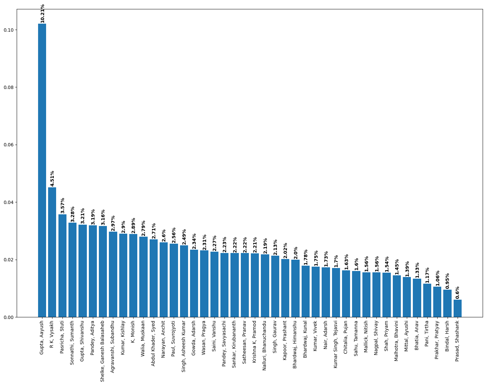

from typing import List
import random
import csv
import matplotlib.pyplot as plt09 Predict the Leader
Imports
Making the Network from the CSV file
def make_graph(file_name: str) -> dict:
with open(file_name, "r") as csv_file:
csv_data = csv.reader(csv_file)
# Take All Names of Nominations from 1st column.
# Since 0th column is Title "Name"
NOMINATIONS = next(csv_data)[1:]
NETWORK = {name: [] for name in NOMINATIONS}
for row in csv_data:
votee = row[0]
for idx, isVote in enumerate(row[1:]):
if isVote == '1':
NETWORK[NOMINATIONS[idx]].append(votee)
return NETWORKNETWORK = make_graph("./data/TLP_Leader_Data.csv")Network Test to match values
# Netwrok Check
assert NETWORK['Abdul Khader, Syed'] == ["Gupta, Aayush", "R K, Vysakh"], "Network is INCORRECT"assert NETWORK['R K, Vysakh'] == ['Gupta, Aayush', 'Gowda, Adarsh', 'Narayan, Anchit', 'Sankar, Kirubananth',
'Bhardwaj, Kunal', 'Walia, Muskaan', 'Krishna K, Pramod', 'Pandey, Savyasachi',
'Pasricha, Stuti', 'Abdul Khader, Syed', 'Kumar Singh, Tejasvi', 'Pani, Tirtha',
'Kumar, Vivek']Random Walk for NUMBER_WALKS times
pointer = random.choice(list(NETWORK.keys()))
visits = {k:0 for k,v in NETWORK.items()}
NUMBER_WALKS = 40_000
for _ in range(NUMBER_WALKS):
pointer = random.choice(NETWORK[pointer])
visits[pointer] += 1Plotting
orderedVisits = sorted(visits.items(), key = lambda item: item[1], reverse=True)
nodes = [key for key,val in orderedVisits]
values = [val/NUMBER_WALKS for key,val in orderedVisits]
# The Adjust the Plot Size
plt.figure(figsize = (18,12))
# To Have the x-axis label as vertical
plt.xticks(rotation=90)
# Bar Graph
plt.bar(nodes, values)
# To plot the number value on each Bar
for i, v in enumerate(values):
plt.text(i-0.2, v+0.0007, str(round(v*100,2))+"%", color='black', fontweight='bold', rotation=90)
plt.show()
Top 5 Standings
for idx, (name, percentageVoting) in enumerate(orderedVisits[:5]):
print(f"{name} has Rank:{idx+1} with the vote percentage of: {round(percentageVoting/NUMBER_WALKS * 100,2)}%")Gupta, Aayush has Rank:1 with the vote percentage of: 10.21%
R K, Vysakh has Rank:2 with the vote percentage of: 4.51%
Pasricha, Stuti has Rank:3 with the vote percentage of: 3.57%
Sonnathi, Sumanth has Rank:4 with the vote percentage of: 3.28%
Gupta, Shivanshu has Rank:5 with the vote percentage of: 3.21%import numpy as npnp.genfromtxt?Signature:
np.genfromtxt(
fname,
dtype=<class 'float'>,
comments='#',
delimiter=None,
skip_header=0,
skip_footer=0,
converters=None,
missing_values=None,
filling_values=None,
usecols=None,
names=None,
excludelist=None,
deletechars=" !#$%&'()*+,-./:;<=>?@[\\]^{|}~",
replace_space='_',
autostrip=False,
case_sensitive=True,
defaultfmt='f%i',
unpack=None,
usemask=False,
loose=True,
invalid_raise=True,
max_rows=None,
encoding='bytes',
*,
ndmin=0,
like=None,
)
Docstring:
Load data from a text file, with missing values handled as specified.
Each line past the first `skip_header` lines is split at the `delimiter`
character, and characters following the `comments` character are discarded.
Parameters
----------
fname : file, str, pathlib.Path, list of str, generator
File, filename, list, or generator to read. If the filename
extension is ``.gz`` or ``.bz2``, the file is first decompressed. Note
that generators must return bytes or strings. The strings
in a list or produced by a generator are treated as lines.
dtype : dtype, optional
Data type of the resulting array.
If None, the dtypes will be determined by the contents of each
column, individually.
comments : str, optional
The character used to indicate the start of a comment.
All the characters occurring on a line after a comment are discarded.
delimiter : str, int, or sequence, optional
The string used to separate values. By default, any consecutive
whitespaces act as delimiter. An integer or sequence of integers
can also be provided as width(s) of each field.
skiprows : int, optional
`skiprows` was removed in numpy 1.10. Please use `skip_header` instead.
skip_header : int, optional
The number of lines to skip at the beginning of the file.
skip_footer : int, optional
The number of lines to skip at the end of the file.
converters : variable, optional
The set of functions that convert the data of a column to a value.
The converters can also be used to provide a default value
for missing data: ``converters = {3: lambda s: float(s or 0)}``.
missing : variable, optional
`missing` was removed in numpy 1.10. Please use `missing_values`
instead.
missing_values : variable, optional
The set of strings corresponding to missing data.
filling_values : variable, optional
The set of values to be used as default when the data are missing.
usecols : sequence, optional
Which columns to read, with 0 being the first. For example,
``usecols = (1, 4, 5)`` will extract the 2nd, 5th and 6th columns.
names : {None, True, str, sequence}, optional
If `names` is True, the field names are read from the first line after
the first `skip_header` lines. This line can optionally be preceded
by a comment delimiter. If `names` is a sequence or a single-string of
comma-separated names, the names will be used to define the field names
in a structured dtype. If `names` is None, the names of the dtype
fields will be used, if any.
excludelist : sequence, optional
A list of names to exclude. This list is appended to the default list
['return','file','print']. Excluded names are appended with an
underscore: for example, `file` would become `file_`.
deletechars : str, optional
A string combining invalid characters that must be deleted from the
names.
defaultfmt : str, optional
A format used to define default field names, such as "f%i" or "f_%02i".
autostrip : bool, optional
Whether to automatically strip white spaces from the variables.
replace_space : char, optional
Character(s) used in replacement of white spaces in the variable
names. By default, use a '_'.
case_sensitive : {True, False, 'upper', 'lower'}, optional
If True, field names are case sensitive.
If False or 'upper', field names are converted to upper case.
If 'lower', field names are converted to lower case.
unpack : bool, optional
If True, the returned array is transposed, so that arguments may be
unpacked using ``x, y, z = genfromtxt(...)``. When used with a
structured data-type, arrays are returned for each field.
Default is False.
usemask : bool, optional
If True, return a masked array.
If False, return a regular array.
loose : bool, optional
If True, do not raise errors for invalid values.
invalid_raise : bool, optional
If True, an exception is raised if an inconsistency is detected in the
number of columns.
If False, a warning is emitted and the offending lines are skipped.
max_rows : int, optional
The maximum number of rows to read. Must not be used with skip_footer
at the same time. If given, the value must be at least 1. Default is
to read the entire file.
.. versionadded:: 1.10.0
encoding : str, optional
Encoding used to decode the inputfile. Does not apply when `fname` is
a file object. The special value 'bytes' enables backward compatibility
workarounds that ensure that you receive byte arrays when possible
and passes latin1 encoded strings to converters. Override this value to
receive unicode arrays and pass strings as input to converters. If set
to None the system default is used. The default value is 'bytes'.
.. versionadded:: 1.14.0
ndmin : int, optional
Same parameter as `loadtxt`
.. versionadded:: 1.23.0
like : array_like, optional
Reference object to allow the creation of arrays which are not
NumPy arrays. If an array-like passed in as ``like`` supports
the ``__array_function__`` protocol, the result will be defined
by it. In this case, it ensures the creation of an array object
compatible with that passed in via this argument.
.. versionadded:: 1.20.0
Returns
-------
out : ndarray
Data read from the text file. If `usemask` is True, this is a
masked array.
See Also
--------
numpy.loadtxt : equivalent function when no data is missing.
Notes
-----
* When spaces are used as delimiters, or when no delimiter has been given
as input, there should not be any missing data between two fields.
* When the variables are named (either by a flexible dtype or with `names`),
there must not be any header in the file (else a ValueError
exception is raised).
* Individual values are not stripped of spaces by default.
When using a custom converter, make sure the function does remove spaces.
References
----------
.. [1] NumPy User Guide, section `I/O with NumPy
<https://docs.scipy.org/doc/numpy/user/basics.io.genfromtxt.html>`_.
Examples
--------
>>> from io import StringIO
>>> import numpy as np
Comma delimited file with mixed dtype
>>> s = StringIO(u"1,1.3,abcde")
>>> data = np.genfromtxt(s, dtype=[('myint','i8'),('myfloat','f8'),
... ('mystring','S5')], delimiter=",")
>>> data
array((1, 1.3, b'abcde'),
dtype=[('myint', '<i8'), ('myfloat', '<f8'), ('mystring', 'S5')])
Using dtype = None
>>> _ = s.seek(0) # needed for StringIO example only
>>> data = np.genfromtxt(s, dtype=None,
... names = ['myint','myfloat','mystring'], delimiter=",")
>>> data
array((1, 1.3, b'abcde'),
dtype=[('myint', '<i8'), ('myfloat', '<f8'), ('mystring', 'S5')])
Specifying dtype and names
>>> _ = s.seek(0)
>>> data = np.genfromtxt(s, dtype="i8,f8,S5",
... names=['myint','myfloat','mystring'], delimiter=",")
>>> data
array((1, 1.3, b'abcde'),
dtype=[('myint', '<i8'), ('myfloat', '<f8'), ('mystring', 'S5')])
An example with fixed-width columns
>>> s = StringIO(u"11.3abcde")
>>> data = np.genfromtxt(s, dtype=None, names=['intvar','fltvar','strvar'],
... delimiter=[1,3,5])
>>> data
array((1, 1.3, b'abcde'),
dtype=[('intvar', '<i8'), ('fltvar', '<f8'), ('strvar', 'S5')])
An example to show comments
>>> f = StringIO('''
... text,# of chars
... hello world,11
... numpy,5''')
>>> np.genfromtxt(f, dtype='S12,S12', delimiter=',')
array([(b'text', b''), (b'hello world', b'11'), (b'numpy', b'5')],
dtype=[('f0', 'S12'), ('f1', 'S12')])
File: ~/coding/TLP/PlakshaTLP/venv/lib/python3.10/site-packages/numpy/lib/npyio.py
Type: function